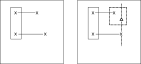
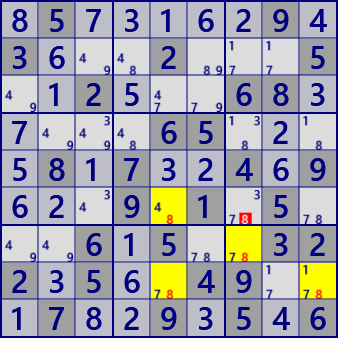
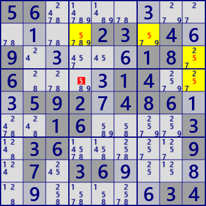

Skyscraper
Skyscraperの説明には、セル間リンクと、関係セルの参照を用います。
Skyscraperは、LockedSet、Fishと同様にパターン型の解法で、2つの強いリンクで構成されます。
左図のように着目数字Xの2つの強いリンクがあり、4つある端セルのうち1組のみ同じHouseに属しているとします。
このとき残りの端セルと同時に関係するセル（右図の△セル）は、Lockedにより候補数字からXが除外されます。

Skyscraperの解析アルゴリズムも、この図の手順とおりです。
- 着目数字Xの設定
- 2組のリンクの選択
- リンクの条件チェック(リンク端点の1対のみ同じHouse)
- 除外候補セル探索






.5.....9.3...2...5..2...68.....65....8.7..4.9...9.1.5...6.5..322.5..49...7..9.5.6(上段）
56...........23.4.9.....18.6....14...592.486...16....3.36.....9.7.36...........34(下段）